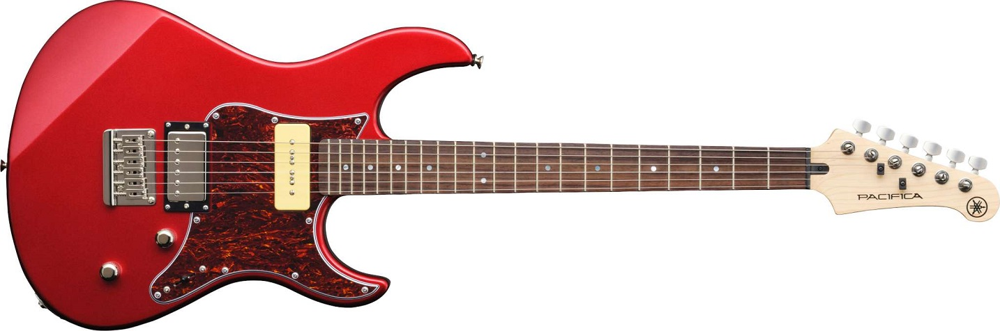

19 января 2026 г.
Фамилия: ЛИ, ключ = 10 → зашифровано: ХТ
Путешествие в тысячу миль начинается с одного шага (Лао Цзы)
Поздравление с Наступающим 2026 годом читайте здесь.
Я сделала Новогодние кроссворды для сайта Сайт моего друга.
Путешествие в тысячу миль начинается с одного шага (Лао Цзы)
Оставляю в прошлом скучную неинтересную локальную файловую систему ради Всемирной паутины.
Иконки:
20 января 2026 года
Открытый ключ: (n, e) = (см. ниже, e = 65537)
Закрытый ключ: (n, d) — известен только владельцу
Реальное значение n (3072-битный RSA, 925 десятичных цифр):
25195908475657893494027183240048399174017569733789253954907034627438056529134543510620 52379991010904017780572585420634399127146594974067084407088178311602564210743507710106 75872776133028420640203312236132087252542748123570924353572196729607815405576553884884 70195988888060369523052074278817728270170972235477533217289103108910038348457761088100 55044223811734196302409144405888910232974195485027237658233588129105239998112430339191 72081021589095575338117271044832105168463175023605658101005910310891003834845776108810 05504422381173419630240914440588891023297419548502723765823358812910523999811243033919 17208102158909557533811727104483210516846317502360565810100591031089100383484577610881 00550442238117341963024091444058889102329741954850272376582335881291052399981124303391 91720810215890955753381172710448321051684631750236056581010059103108910038348457761088 10055044223811734196302409144405888910232974195485027237658233588129105239998112430339 19172081021589095575338117271044832105168463175023605658101005910310891003834845776108 81005504422381173419630240914440588891023297419548502723765823358812910523999811243033 91917208102158909557533811727104483210516846317502360565810100591031089100383484577610 88100550442238117341963024091444058889102329741954850272376582335881291052399981124303 39191720810215890955753381172710448321051684631750236056581010059103108910038348457761 08810055044223811734196302409144405888910232974195485027237658233588129105239998112430 339191720810215890955753381172710448321051684631750236056581010059103108910038348457761 0881005504422381173419630240914440......
Примечание: в учебном примере использовались маленькие числа (p = 3, q = 5), но в реальных системах — такие огромные ключи для защиты данных.
«Филя — это не просто собака, это пушистое воплощение радости и преданности. Её глаза сияют любовью, а виляющий хвост способен растопить даже самое холодное сердце. В День святого Валентина она напоминает нам, что настоящая любовь — это когда кто-то всегда ждёт тебя дома, независимо от погоды и настроения. Филя — лучший друг, который учит нас жить здесь и сейчас, радоваться простым вещам и никогда не сдаваться.»
— Сгенерировано нейросетью 💕
Распознавание породы Фили:

«Гитара — это не просто музыкальный инструмент, это голос души, способный выразить то, что невозможно сказать словами. Её струны подобны сердечным нитям, которые вибрируют от прикосновения любви. В День святого Валентина гитара напоминает нам о серенадах под окнами возлюбленных, о романтике костров и звёздного неба, о музыке, которая объединяет сердца. Каждый аккорд — это признание в любви, каждая мелодия — история двух душ, нашедших друг друга.»
— Сгенерировано нейросетью 💕🎵
Распознавание типа гитары:
❓ Вопрос пользователя:
Сколько ждать мой заказ?
✅ Найденный вопрос:
Как оплатить заказ?
💬 Ответ:
Мы принимаем оплату банковскими картами, электронными кошельками и наличными при получении.
📊 Оценка схожести: 0.7442
if sim < 0.8💡 Решение: Расширить базу FAQ синонимами и добавить пост-обработку:
if max_similarity < 0.8:
return "К сожалению, я не нашёл точного ответа. Попробуйте переформулировать вопрос."
🤖 Модель машинного обучения предсказывает баллы студента на основе часов подготовки.
📋 Прогнозы для разных значений:
| ⏱️ Часы подготовки | 📊 Прогноз баллов |
|---|---|
| 1 | 58.18 |
| 3 | 67.29 |
| 5 ⭐ | 76.40 |
| 7 | 85.51 |
| 10 | 99.18 |
🤖 Decision Tree Classifier для принятия решений о страховании на основе возраста, стажа и истории ДТП.
📈 Распределение решений:
🔍 Важность признаков:
👤 Проверить клиента:
🤖 Обучение нейронной сети (3 слоя, sigmoid) на датасете StudentsPerformance. Признаки: пол, обед, подготовка, чтение, письмо.
📊 Прогресс обучения (каждые 100 эпох):
| 🔄 Эпоха | 📉 Ошибка (MSE) |
|---|---|
| 0 | 0.017621 |
| 100 | 0.004134 |
| 200 | 0.003941 |
| 300 | 0.003910 |
| 400 | 0.003894 |
| 500 | 0.003884 |
| 600 | 0.003876 |
| 700 | 0.003869 |
| 800 | 0.003864 |
| 900 | 0.003859 |
🔍 Примеры прогнозов (реальные оценки):
| 📋 Факт | 🎯 Прогноз | 📏 Разница |
|---|---|---|
| 52.0 | 48.09 | −3.91 |
| 40.0 | 45.12 | +5.12 |
| 65.0 | 62.65 | −2.35 |
| 63.0 | 59.75 | −3.25 |
| 93.0 ⭐ | 84.76 | −8.24 |
🤖 Нейросеть — это как команда из 2 экспертов (скрытый слой),
которые смотрят на данные студента, каждый делает своё заключение,
а потом главный эксперт (выходной слой) объединяет их мнения
и выдаёт прогноз.
Сначала эксперты ошибаются, но после 1000 тренировок они учатся
обращать внимание на то, что действительно важно:
📚 оценки за чтение и письмо, ✍️ подготовку к тесту и другие признаки.
📊 Схема работы:
🎯 На что сеть обращает внимание:
🔄 Как проходит обучение:
| 📊 Этап | 📝 Что происходит |
|---|---|
| 1–100 эпох | Эксперты «гадают», ошибка большая |
| 100–500 эпох | Учатся на ошибках, ошибка падает |
| 500–1000 эпох ⭐ | Находят важные закономерности, ошибка минимальна |